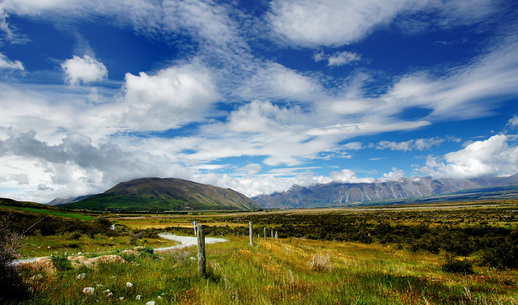

⛏The country is protected by strong walls.
その国は強い壁で守られている。
/ðə ˈkʌntri ɪz prəˈtɛktəd baɪ ˈstrɔŋ wɔlz/
- the は弱形 /ðə/
- country と is は母音同士なので特に連結現象なし
ザ カントリー イズ プロテクティド バイ ストロング ウォーズ

⛏The country is protected by strong walls.
その国は強い壁で守られている。
⛏I found a country ruled by kind villagers.
親切な村人が治める国を見つけた。
⛏Every country needs proper roads and defense systems.
すべての国には適切な道路と防御システムが必要だ。
⛏We built roads across the country to connect all villages.
すべての村を繋ぐため、国全体に道路を建設しました。